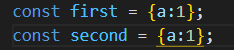
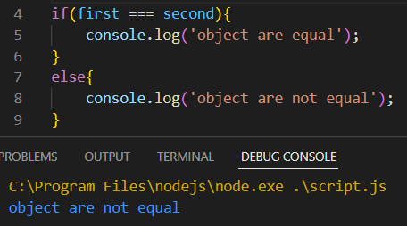
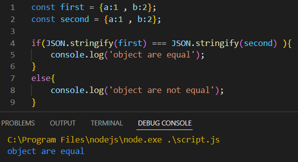
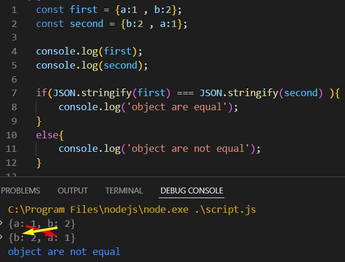
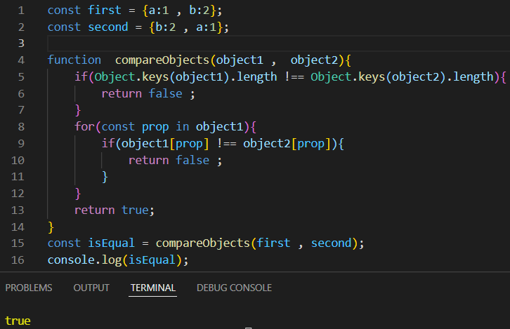

Compare objects, referential integrity

এই দুইটা object কে দেখতে একই মনে হলেও ।
js এদেরকে different বলবে ।

কারন js object এর compare করতে গেলে তখন তার referential integrity তাকে check করে ।
মানে হল object গুলা দেখতে একই হলেও কিছু যায় আসেনা ।
সে দেখে যে জায়গায় আছে সেটা একই জায়গায় কিনা ।
এখন যদি const third = first; এবার যদি ___ === ___ চেক করি তবে এবার object are equal বলবে ।
কারন এখানে 2টা same Reference ধারন করছে ।
অর্থাৎ 2টা দেখতে এক হলে কিছু যায় আসেনা , অদের ভেতরের Reference এক হতে হয় ।
কিছু কিছু ক্ষেত্রে এমন হয় যে এই 2টাকে compere করতেই হবে । কুন্তু তাদের নাম আলাদা , Reference আলাদা আছে ।
সে ক্ষেত্রে অনেক গুলা way আছে , সে ক্ষেত্রে
১, object কে stringfy করে তারপর compere করা ।

এটা string এ convert হওয়ার পরে string কে কিন্তু আর Reference দিয়ে check করেনা ।
এক ক্ষেত্রে দেখে value টা ঠিক আছে কিনা বা type টা ঠিক আছে কিনা ।
কিন্তু এ ক্ষেত্রে একটা সমস্যা আছে যে যদি value গুলার Position পরিবর্তন করি তবে ।
সেটা not equal দিবে কারন এখানে object হিসাবে ঠিক আছে কিন্তু string এর index position change হয়ে যাওয়াতে সেটাকে false পায় ।

2, অনেক সময় ধরে ধরে একটু একটু করে সেটাকে check করে । function এর সাহায্যে
সেটার parameter হিসাবে 2 টা object নিতে হবে ।
তার মধ্যে সে প্রথমে দেখবে যে 2 টা object ,, same কিনা 2 object একই হতে হলে তাদের সমান সংখ্যক keys থাকতে হবে ।
keys চেক করার জন্য 5nl এর statement
property চেক করার জন্য 8nl এর loop
loop এর ভেতর statement check করা হয়েছে( !== __ strict not equal __ ) দিয়ে তাই সেটা value এর type ও check করবে ।
এই দুইটা false হলে সেটাকে true return করবে ।
